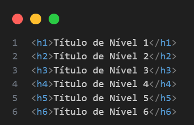

Tags <h1> a <h6> no HTML5
As tags <h1> a <h6> são utilizadas para definir títulos e subtítulos em uma página HTML. Elas são conhecidas como tags de cabeçalho (headings) e são fundamentais para a estruturação semântica do conteúdo, além de contribuírem diretamente para a acessibilidade e o SEO (otimização para mecanismos de busca).
Hierarquia dos cabeçalhos
Cada tag representa um nível diferente de importância, formando uma hierarquia:
-
<h1>: título principal (mais importante). -
<h2>: subtítulo do<h1>. -
<h3>: subtítulo do<h2>, e assim por diante até o<h6>.
Exemplo de uso hierárquico:
Funções e boas práticas
- Semântica: os cabeçalhos indicam a estrutura lógica da página.
-
SEO: os motores de busca dão mais relevância ao conteúdo envolvido em &
lt;h1>e<h2>. - Acessibilidade: leitores de tela usam a hierarquia de títulos para facilitar a navegação.
- Estilização: todos os cabeçalhos têm estilos padrão (maior tamanho e peso), mas podem ser personalizados com CSS.
Dicas importantes
-
Use apenas um
<h1>por página para o título principal, quando possível. -
Não pule níveis (ex: não usar
<h4>logo após<h1>). - Use cabeçalhos para organizar o conteúdo, não apenas pelo tamanho da fonte (para isso, use CSS).